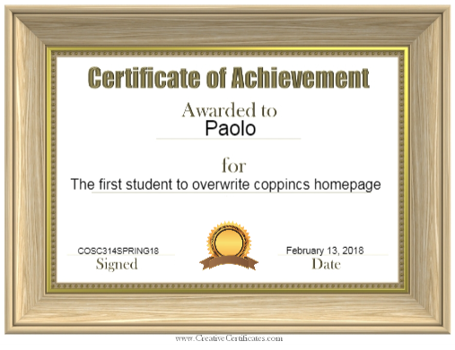

Hello and welcome to my website.

My name is Paolo and thanks for visiting my site. This page is made with HTML, CSS, and some JavaScript(gallery page), using my editor of choice, Brackets and uploaded to a web server using FileZilla. I am the first to overwrite the student homepage for spring 314 class. I will update this site as I learn along the course. Meanwhile, enjoy some story telling with kafka dummy text generated from www.blindtextgenerator.com.
One morning, when Gregor Samsa woke from troubled dreams...
He found himself transformed in his bed into a horrible vermin. He lay on his armour-like back, and if he lifted his head a little he could see his brown belly, slightly domed and divided by arches into stiff sections. The bedding was hardly able to cover it and seemed ready to slide off any moment. His many legs, pitifully thin compared with the size of the rest of him, waved about helplessly as he looked. "What's happened to me? " he thought. It wasn't a dream.
His room, a proper human room although a little too small, lay peacefully between its four familiar walls. A collection of textile samples lay spread out on the table - Samsa was a travelling salesman - and above it there hung a picture that he had recently cut out of an illustrated magazine and housed in a nice, gilded frame. It showed a lady fitted out with a fur hat and fur boa who sat upright, raising a heavy fur muff that covered the whole of her lower arm towards the viewer. Gregor then turned to look out the window at the dull weather.
Drops of rain could be heard hitting the pane, which made him feel quite sad.
I hope you enjoyed that. These excerpts could have been taken from
-
The Metamorphosis
-
The Castle
-
Pride and Prejudice
-
To Kill a Mockingbird
I don't know. I'm just practicing to place unordered lists here.
Back to the story...
up on his belly; pushed himself slowly up on his back towards the headboard so that he could lift his head better; found where the itch was, and saw that it was covered with lots of little white spots which he didn't know what to make of; and when he tried to feel the place with one of his legs he drew it quickly back because as soon as he touched it he was overcome by a cold shudder. He slid back into his former position. "Getting up early all the time", he thought, "it makes This is strong!!! you stupid. You've got to get enough sleep. Other travelling salesmen live a life of luxury. For instance, whenever I go back to the guest house during the morning to copy out the contract, these gentlemen are always still sitting there eating their breakfasts. I ought to just try that with my boss; I'd get kicked out on the spot. But who knows, maybe that would be the best thing for me. If I didn't have my parents to think about I'd have given in my notice a long time ago, I'd have gone up to the boss and told him just what I think, tell him everything I would, let him know just what I feel. He'd fall right off his desk!